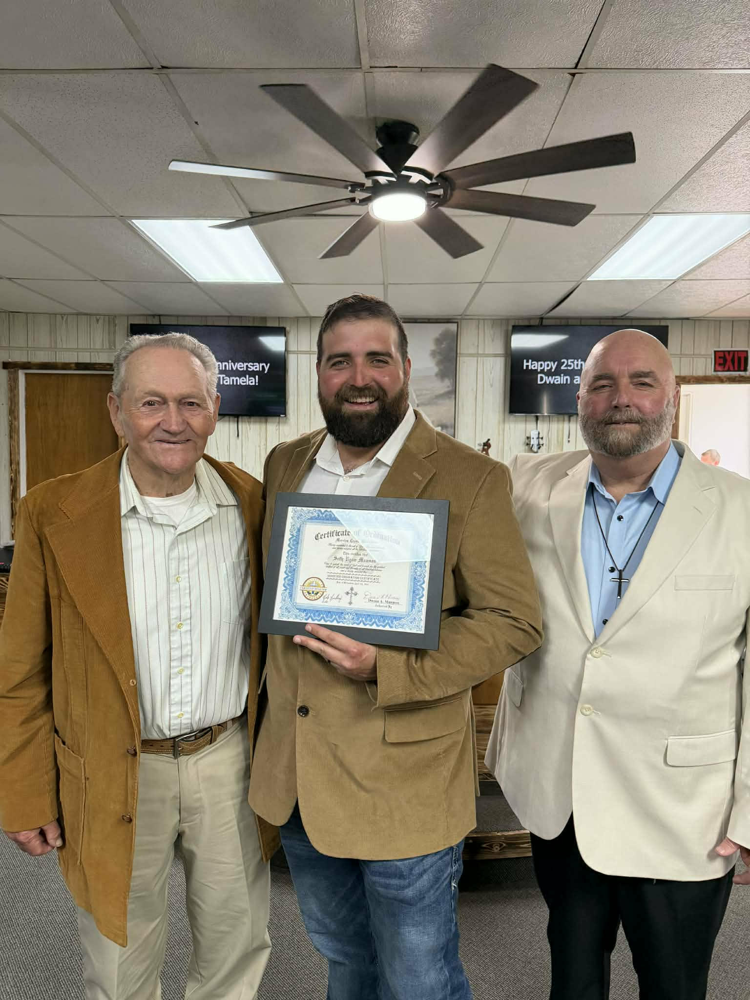
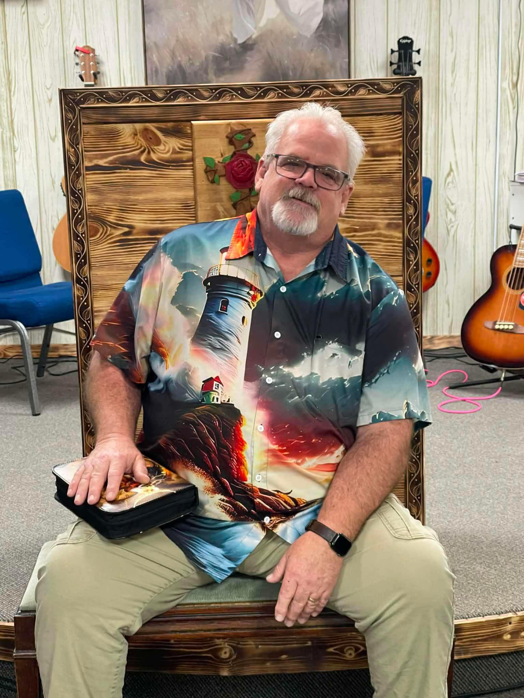

About Us
Our story, our mission, and the people who call this place home.

Pastor Seth Mannon

Pastor Dwain Mannon

Pastor Wes Lockhart
Who We Are
Mercies Cross Ministries is a Spirit-filled, Bible-believing church located in the heart of Ironton, Ohio. We are a community of imperfect people seeking a perfect God — growing in faith together and living out the love of Jesus in our everyday lives.
Our name reflects the very heart of the Gospel: at the cross, God's mercies are fully revealed. We believe those mercies are not just a one-time gift, but a daily reality for every person who walks through our doors.
Senior Pastor - Dwain Mannon
Pastor Dwain is a passionate Bible Scholar and has a heart for teaching the word of God and shepherding God's people. He cares deeply about the spiritual growth and biblical understanding of the congregation, and he is committed to leading with integrity, humility, and a servant's heart.
Assistant Pastors - Seth Mannon and Wes Lockhart
Ministry is often a family affair, and at Mercies Cross that rings especially true. Pastor Seth, Pastor Dwain's nephew, and Pastor Wes, who joined the family through marriage, serve alongside Pastor Dwain with the same passion for people and commitment to the gospel that defines this church. Together they bring energy, compassion, and a servant's heart to everything they do — whether that's walking with someone through a difficult season, pouring into the next generation, or simply being present for the congregation day in and day out. Their investment in the people of Mercies Cross goes beyond Sunday mornings, reflecting a shared belief that real ministry happens in everyday life.
"The steadfast love of the Lord never ceases; his mercies never come to an end. They are new every morning; great is your faithfulness."
— Lamentations 3:22–23Our Mission
We exist to glorify God by making disciples, building community, and serving others. Our mission is simple: Love God. Love people. Make His name known in Ironton and beyond.
From Sunday worship and Wednesday Bible study to community outreach and prayer gatherings, everything we do flows from that central calling — to know Christ and to make Him known.
Our Community
Ironton is our home, and we take that seriously. We are neighbors, coworkers, friends, and family who have chosen to root our lives in this community and serve it faithfully. We believe the local church is one of God's greatest gifts to a neighborhood, and we strive to live up to that calling every day.
Whether you're new to the area, searching for a church home, or just curious what we're about — we'd love to meet you. Come as you are. You belong here.